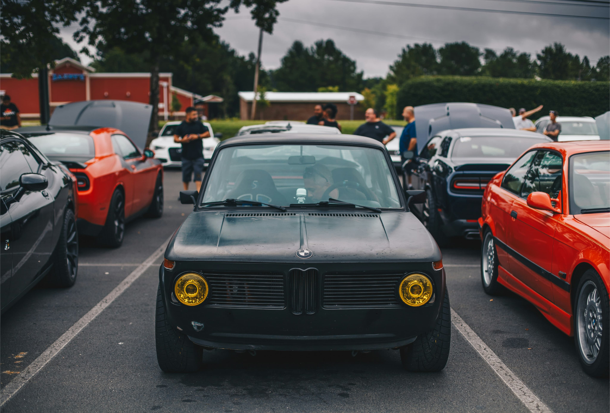

Step into the world of timeless performance and unrivaled
craftsmanship with our curated selection of BMW E34 1995 models.
Discover the unmatched performance and exquisite craftsmanship of
the BMW E34 1995 through our carefully curated collection.
Experience the perfect blend of timeless design and engineering
excellence that defines this iconic model.
Launched in 1988, the E34 series represented the epitome of luxury
and performance in the midsize sedan segment. With its timeless
design, elegant lines, and meticulous attention to detail, the BMW
E34 1995 captured the essence of sophistication and style.
history
Renowned for its innovative engineering and cutting-edge technology,
the BMW E34 1995 set new standards in the automotive industry. From
its advanced suspension system to its aerodynamic design, every
aspect of the E34 series was meticulously crafted to deliver a
driving experience unlike any other.
key features
timeless design
Discover the BMW E34, a true icon of automotive history
renowned for its timeless design and unparalleled
craftsmanship.
dynamic performance
Experience the exhilarating prowess of the 1995 BMW E34, where every curve and acceleration embodies a symphony of power and precision. Engineered for the thrill-seeking enthusiast, this iconic model combines responsive handling with cutting-edge technology.
advanced technology
Step into the future with the 1995 BMW E34, where cutting-edge innovation meets timeless design.
Under the hood, the BMW E34 1995 boasted a range of powerful
engines designed to deliver uncompromising performance and
efficiency.
Whether it was the smooth power delivery of the inline-six or
the exhilarating acceleration of the V8, each engine option was
meticulously engineered to provide an exhilarating driving
experience.
Coupled with its advanced suspension system and responsive
steering, the BMW E34 1995 offered a dynamic driving experience
that was second to none.
driving experience
Behind the wheel of the BMW E34 1995, drivers were treated to a
symphony of power, precision, and refinement. Whether navigating
city streets or carving through winding roads, the E34 series
offered a balanced and composed driving experience that instilled
confidence in every turn. With its smooth acceleration, precise
handling, and refined ride quality, the BMW E34 1995 was more than
just a car—it was an extension of the driver's passion for
performance and luxury.
250k+
units produced
30+
years since its debut
50k+
enthusiasts worldwide
gallery

Get more tips now!
Ensure regular maintenance, opt for quality parts and Stay
connected with the community
The BMW E34 1995 offers exceptional performance with a range
of powerful engine options. Whether you choose the
inline-six or V8 engine, you can expect smooth acceleration,
responsive handling, and a thrilling driving experience.
What makes the BMW E34 1995 a timeless classic?
The BMW E34 1995 is renowned for its elegant design, exceptional build quality, and advanced engineering. Its timeless silhouette, iconic kidney grille, and luxurious interior have made it a favorite among car enthusiasts and collectors. The combination of powerful performance and reliability ensures it remains a sought-after model even decades after its release.
What engine options are available for the car?
The BMW E34 1995 offers a range of engine options, including the reliable inline-six and the powerful V8. These engines are known for their smooth power delivery, impressive performance, and overall driving enjoyment, catering to different preferences and driving styles.
How fuel-efficient is the BMW E34 1995?
Fuel efficiency for the BMW E34 1995 varies depending on the engine type and driving conditions. Generally, the inline-six engines offer better fuel economy compared to the V8. With careful driving and regular maintenance, owners can achieve a balanced mix of performance and fuel efficiency.